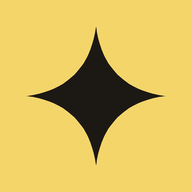

I sei classici
La bottega di Natale
Al banco
In bottega
Accanto a questi ci sono i gusti di stagione: chiedete al banco quelli del giorno.
Panettoni, gubane e piccoli regali fatti in laboratorio. Si trovano in negozio a Pagnacco.
Ogni giorno ci sono anche gusti senza glutine e vegani: chiedete al banco quali sono.
Prezzi, pezzature e disponibilità: chiedete in negozio o allo 0432 661199.
Non sai cosa scegliere?
Che gusto prendo?
Cosa porto a Natale?
Scrivi cosa ti piace o per chi è: ti propongo i gusti giusti dal nostro banco.
Scrivi per chi è il regalo o cosa piace in famiglia: ti propongo cosa portare dalla bottega.
Per allergie e intolleranze non affidarti a un consiglio automatico: chiedi sempre al banco o allo 0432 661199.
Le proposte sono scritte dall'intelligenza artificiale e possono sbagliare. Per allergie e intolleranze chiedi sempre in gelateria.
Qui il consigliere non è disponibile: sfoglia il banco qui sopra, ogni voce ha la sua descrizione.
Il laboratorio di via Pazzan
Fatto qui
Tutto l'anno sul banco
Crema Cebuine
Miele e nocciola IGP, da spalmare. La fanno in laboratorio e la trovate al banco tutto l'anno.
Chi è passato da noi
«Se desiderate un gelato con ingredienti locali di elevatissima qualità, questa è la gelateria.»
Claudia, Pagnacco
La nostra storia
Dal 2005, alla rotonda
Qui andrà la loro storia: come è nata la gelateria, il nome, le ricette. Spazio pronto, testo da scrivere insieme.
Vieni a trovarci
Pagnacco
0432 661199Orari
Orari indicativi, da confermare con la gelateria: cambiano con la stagione.
Dove
Via Pazzan 9
33010 Pagnacco (UD)
Vicino alla rotonda
Seguici
Via Pazzan 9, Pagnacco
Sul sito vero qui si apre la mappa di Google al tocco (con il consenso ai cookie). In questa bozza apri la mappa in una nuova scheda.
Apri la mappa
Stella Polare sul telefono
Mettila tra le app: si apre come un'app vera, con orari e banco sempre a portata.
Bozza di proposta FORGEfoundries: non è il sito ufficiale della gelateria. Prezzi, orari e testi sono da confermare.